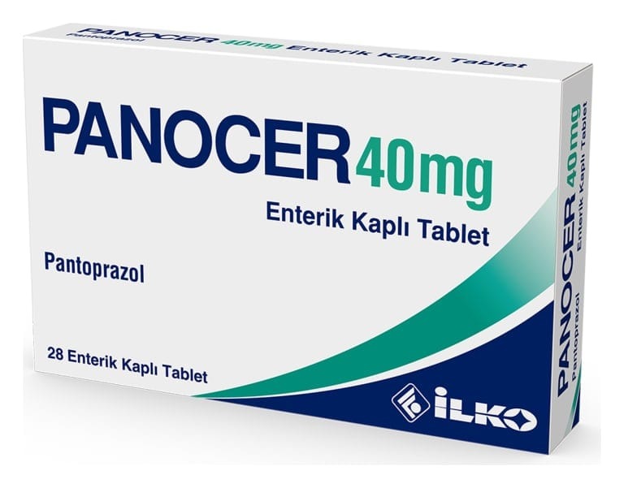

Panocer 40 mg Enterik Kaplı Tablet, 28 Adet

Ne için kullanılır
KT · Bölüm 1• PANOCER, ilaçların midede çözülmesini engelleyen özel bir madde ile kaplı (enterik kaplı) tabletler şeklinde kullanıma sunulmuştur. Her bir tabletin içinde etkin madde olarak 40 mg pantoprazol (pantoprazol sodyum seskihidrat olarak) bulunmaktadır.
• PANOCER’in etkin maddesi olan pantoprazol, “proton pompası inhibitörü” olarak isimlendirilen bir ilaç grubuna dahildir. Etkisini midenizde üretilen asit miktarını azaltarak gösterir. Midenin ve bağırsakların asitle ilişkili rahatsızlıklarının tedavisinde kullanılır.
• PANOCER, kutuda 14 ve 28 tabletlik blisterler içinde piyasaya sunulmaktadır. Blisterin içindeki tabletler kirli pembe renkli, bikonveks, oval şekillidir.
PANOCER; 12 yaşın üzerindeki çocuklarda ve erişkinlerde: • Gastro-özofajial reflü hastalığında (GÖRH: mide içeriğinin yemek borusuna geri kaçması hastalığı)
Erişkinlerde: • Helicobacter pylori (H. pylori) isimli bir bakterinin neden olduğu duodenal (oniki parmak bağırsağı) ve gastrik (mide) ülserlerde bu bakterinin yok edilmesi ve böylece bu ülserlerin tekrarını önlemek amacıyla, uygun iki antibiyotikle birlikte, • Peptik ülser tedavisinde (duodenal ülser ve gastrik ülser), • Zollinger Ellison Sendromu (midede aşırı asit oluşmasına neden olan hormon üreten pankreastaki tümörler) ve aşırı derecede mide asidi salgılanmasına yol açan diğer durumların tedavisinde kullanılmaktadır.